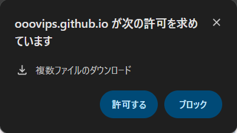

このページについて
Split4X の使い方、4分割投稿の方法、画面構成と操作方法をまとめています。
使い方動画
画像読み込み、ズーム・ドラッグ、Gap 設定、ダウンロードまでの基本手順です。
4分割投稿動画
生成した4枚画像を X へ投稿する流れを説明しています。
画面構成要素の説明
- 左ペイン: 4分割プレビュー表示。表示状態が右ペインの出力に反映されます。
- 出力幅: ダウンロード画像の横幅（px）です。
- Gap を有効 / Gap: 分割の隙間量を調整します。無効時は Gap=0 相当です。
- ズーム: 拡大率を変更します。ホイール操作でも拡大・縮小できます。
- ドラッグ移動: ズーム時に画像位置を調整できます。白帯が出ない範囲で移動します。
- フレームを表示: 左ペインを4分割表示と単一表示で切り替えます。
- クリア: 画像と設定状態を初期化し、新しい画像を読み込める状態に戻します。
- 右ペイン: 4枚の出力サムネイル確認と個別/全ダウンロードを行います。
使用できないケース / 注意事項
4分割画像を投稿するためには以下の条件が必要です。
・X Premium に加入
・PC (Windows / macOS) のウェブブラウザから投稿
※ iPhone や Android 端末からは投稿できません。
ブラウザで確認ダイアログ（下図）が表示された場合は、「許可」 を押してください。
